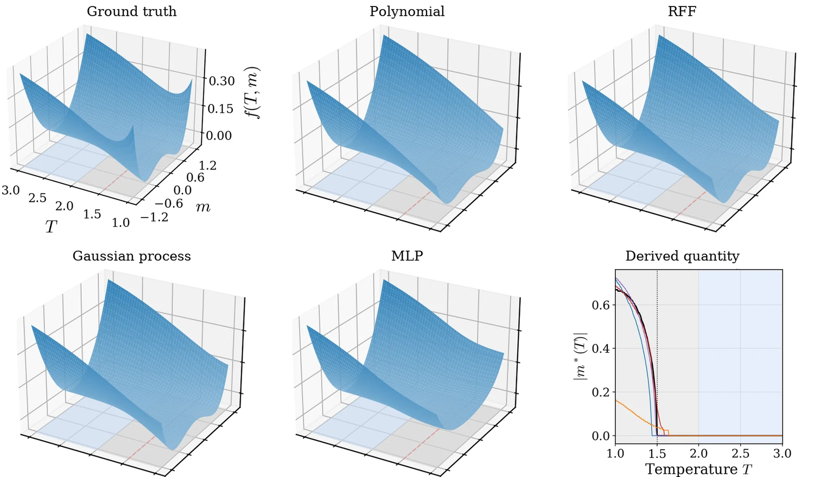

Extrapolation across Phase Transitions with Polynomial and Kernel Regression:
Error Bounds and Power-Law Scaling
NeurIPS 2026
Also presented at the ICML 2026 AI4Physics Workshop
“One of the ways of stopping science would be only to do experiments in the region where you know the law.”
Theoretical physics often requires answering questions about regimes where data is limited or inaccessible. Phase transitions provide a canonical benchmark for extrapolation because a model trained in one phase must predict both where the transition occurs and the qualitatively different behavior that emerges beyond it. In this paper, we ask the following questions:
- Can a model trained on one phase predict an unobserved one?
- If so, which classes of models extrapolate successfully?
- Can we upper-bound the extrapolation error?
- How does extrapolation scale with distance?
Across five phase transitions, we compare polynomial regression, random Fourier features (RFF), Gaussian processes (GP), and a neural network, the multilayer perceptron (MLP).
TLDR: Polynomial and kernel regression learn from one phase to predict another, while the tested neural networks miss the transition. Further, we develop sample-free bound that predicts error amplification for polynomial and RFF models to power-law growth as a function of distance to the transition.
Extrapolating across phase transitions
Phase transitions are a standard example of emergence, where a gradual change in conditions produces a sharp change in collective behavior through local interactions among microscopic components. In the continuous transitions studied here, the order parameter emerges continuously from zero, while its derivatives or associated response functions become singular at the critical point. Their importance spans the behavior of matter in the early universe, the properties of magnets and superconductors, and phase structure in learning theory.
We compare polynomial regression, RFFs, GPs, and an MLP trained on observations from only one phase of each system. We evaluate their predictions in the unobserved phase and use the derived quantities to determine whether they recover the critical point.1 We consistently find MLPs to perform worse than polynomial and kernel regression at both prediction tasks.

Fixed-feature Regression Empirically Extrapolates
Polynomial, RFF, and GP regression recover the physical structure across the transition on all five datasets. The neural-network methods do not recover the unobserved phase structure.2
How can we bound the error?
The comparisons above use ground truth in the unobserved phase to evaluate predictions. Physics often requires predictions in regimes that are experimentally inaccessible or theoretically unresolved, where such comparisons are unavailable. We therefore seek to bound extrapolation error using the error measured within the observed phase, before collecting any target-phase observations.
We measure extrapolation with the empirical transfer coefficient Γemp, the ratio of mean squared error (MSE) on Q to validation MSE on P. For polynomial and RFF models, we bound this ratio when the prediction error lies in the span of the chosen polynomial or cosine features.
MSEQ ≤ ΓGEVP · MSEP.
To compute the bound, we form two matrices that describe the features on the training and target regions. For a feature vector φ, these are the second-moment matrices
B = EP[φφ⊤], A = EQ[φφ⊤].
Proposition 3.3. Finite-feature GEVP bound
Let Fφ be the span of a fixed feature map φ. For probability distributions P and Q, suppose the matrices A and B above are finite and B is positive definite on the feature span. Then
If the prediction error lies in Fφ, this coefficient bounds its MSE on Q relative to its MSE on P.3
The generalized eigenvalue problem finds the combination of features that stays smallest on P relative to its size on Q. We estimate the feature matrices using 10,000 unlabeled Monte Carlo samples from each region, with no target labels.4 The guarantee applies to finite polynomial and RFF feature spaces. For GPs, we use the RFF bound as an empirical proxy rather than a guarantee for the GP itself.5
We compare the GEVP bound with the empirical transfer coefficient across training-set sizes. For polynomials, we also compare with geometry-based Volume and Remez bounds, which use ratios between the volume of a region enclosing both P and Q and the volumes of the individual regions.
GEVP Tightly Bounds the Extrapolation Error
The GEVP bound upper bounds the observed transfer coefficient across training-set sizes, while the geometry-based bounds sit many orders of magnitude above it. We test polynomial and kernel regression on all five datasets and compute the bound without target labels.
How does extrapolation scale with distance?
Observations near a transition may be difficult to obtain because of experimental constraints or the computational cost of resolving critical behavior. How does extrapolation change when we move the training data farther away? We increase the distance between the training region and the critical point while keeping the training-region width, sample count, and target region fixed.
Several targets show power-law growth over the measured distances.
For polynomials, the power-law upper bound follows from the Volume bound (Proposition 3.1 of our paper), based on Theorem 2.3 of Kalavasis et al. (2024). The training and target regions keep fixed volumes while the enclosing region grows linearly with distance, so both relative-volume ratios ρP and ρQ grow linearly as well. For degree-d polynomials, the bound contains the factor ρQρP2d, giving a power-law upper bound of degree 2d + 1 in distance.
For RFFs, Theorem 4.1 uses the Turán–Nazarov inequality [Nazarov 1993] to control how large a sum of oscillations can become outside the training region.
Theorem 4.1. RFF transfer coefficient bounds
Let P and Q be disjoint bounded intervals of positive length with uniform distributions, and let I be the smallest interval containing both. Let 𝒢m be the span of m cosine features with k ≤ 2m distinct signed frequencies λ1, …, λk. For an absolute constant C > 1,
Here μP > 0 is the smallest eigenvalue of EP[ψψ*], where ψ(t) = (eiλ1t, …, eiλkt)⊤. It is unchanged by translations of P.6
For fixed frequencies and training width, the second bound gives a distance-independent upper bound, although its value depends on the frequency configuration and may be very large. The transfer coefficient therefore remains bounded as the separation increases, so positive power-law growth cannot persist indefinitely. This is consistent with the empirical RFF coefficient leveling off beyond D ≈ 0.4 for Polaron and showing little overall growth across the measured range for Rayleigh–Bénard.
Scaling Law of Extrapolation
Across the measured extrapolation distances, we observe power-law growth in the empirical transfer coefficient and GEVP bound on several targets. We prove power-law upper bounds for polynomial and RFF classes and, for fixed RFF frequencies and training width, a distance-independent upper bound, matching our empirical observations. These bounds suggest that extrapolation becomes harder in a structured way rather than catastrophically.
Conclusions
To conclude, our paper answers the following questions.
- Can a model trained on one phase predict an unobserved one?
Yes. Our benchmarks show that a model can recover behavior absent from the observed phase and identify where the transition occurs.
- If so, which classes of models extrapolate successfully?
Polynomial, RFF, and GP regression recover the phase structure across our five datasets. The neural-network methods we test generally miss that structure despite fitting the observed phase.
- Can we upper-bound the extrapolation error?
For finite polynomial and RFF feature spaces, the GEVP bound converts error within the training region into an upper bound on extrapolation error without target labels.
- How does extrapolation scale with distance?
Several measured trends follow approximate power laws, and theory gives power-law upper bounds on the transfer coefficient. For fixed RFF frequencies and training width, a distance-independent upper bound also limits growth.
Together, these results build a principled picture of extrapolation across phase transitions, connecting the prediction of emergent behavior in complex systems with quantitative limits on error growth. This is a concrete step toward a principled extrapolation protocol that physicists can use when the phase of interest is experimentally inaccessible or theoretically unresolved.
Notes
- Appendix F describes dataset preparation and tests how preprocessing affects the ARPES results. Appendix H gives the training procedures and hyperparameters for each method. ↵
- Appendix G tests whether sinusoidal representations and physical constraints improve extrapolation in additional neural-network architectures. ↵
- Appendix B gives the GEVP and Remez derivations and traces the Volume bound to Theorem 2.3 of Kalavasis et al. (2024). ↵
- Appendix B analyzes the sampling error using matrix-Chernoff bounds and checks convergence at our working budget of 10,000 unlabeled samples from each region. ↵
- Appendix D compares the RFF and GP transfer coefficients as the number of random features grows. Appendix E examines GP posterior variance and alternative ways to assess extrapolation error. ↵
- Appendix C proves the power-law and fixed-frequency bounds for RFFs and extends the interval argument to the two-dimensional domains used in our experiments. ↵
Citation
@inproceedings{wei2026extrapolation,
title = {Extrapolation across Phase Transitions with Polynomial and Kernel Regression: Error Bounds and Power-Law Scaling},
author = {Wei, Jeffrey and Zampetakis, Manolis and Sous, John},
booktitle = {Advances in Neural Information Processing Systems},
year = {2026},
}
References
- X. Chen, Y. Sun, E. Hruska, V. Dixit, J. Yang, Y. He, Y. Wang, and F. Liu. Detecting thermodynamic phase transition via explainable machine learning of photoemission spectroscopy. Newton 1, 100066 (2025). doi
- Y. He, S.-D. Chen, Z.-X. Li, et al. Superconducting fluctuations in overdoped Bi2Sr2CaCu2O8+δ. Physical Review X 11, 031068 (2021). doi
- A. Kalavasis, I. Zadik, and M. Zampetakis. Transfer learning beyond bounded density ratios. Preprint (2024). arXiv
- F. L. Nazarov. Local estimates for exponential polynomials and their applications to inequalities of the uncertainty principle type. Algebra i Analiz 5(4), 3–66 (1993).
- R. A. Vargas-Hernández, J. Sous, M. Berciu, and R. V. Krems. Extrapolating quantum observables with machine learning: inferring multiple phase transitions from properties of a single phase. Physical Review Letters 121, 255702 (2018). doi